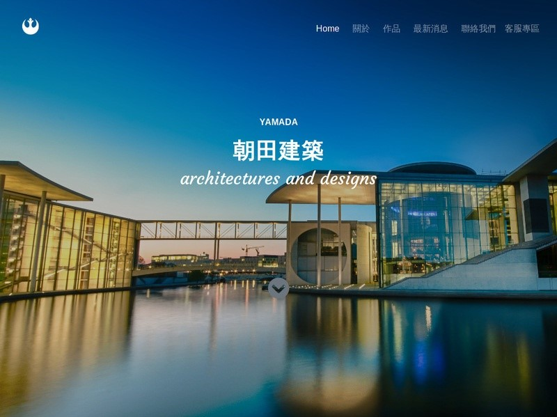
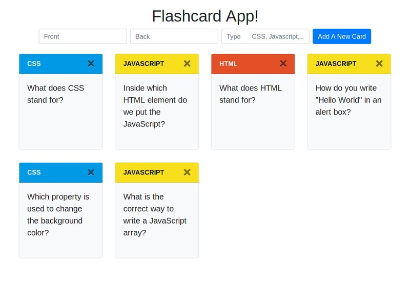
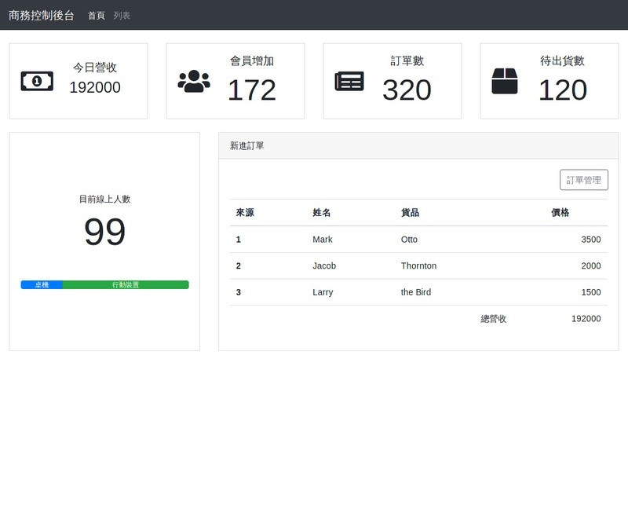

作品集
西式外送餐點形象網頁
運用HTML5、CSS3、JavaScript創作出一個響應式(RWD)的形象網頁
建築設計形象網頁
運用HTML5、CSS3、Bootstrap 4框架與jQuery創作出一個響應式(RWD)的形象網頁
記憶小卡隨身app
運用Vue.js前端框架做出一個翻轉式記憶小卡app(響應式)
電商後台商控頁面
運用Bootstrap 4與jQuery製作商控後台介面
數位公司首頁

運用Bootstrap 4製作
全球城市天氣搜尋app

運用ajax獲取api資料並呈現於使用者介面
StackOverFlow簡易問題集

運用react-router串stackOverFlow的api來製作一個多頁問題集
簡易youtube影片首頁

運用react,react-router,redux,styled-component...等完成一個簡易的youtube clone
更多作品 ---
github
就讀學校
台北醫學大學
呼吸治療學系

國立武陵高中
技術
程式語言 & 工具
未來發展
- 找出自己喜歡的前端技術領域並專精
- 加強熟悉js基本與進階語法在工作上的實用
- 找出有系統的開發模式
- 了解網頁效能方面的調校